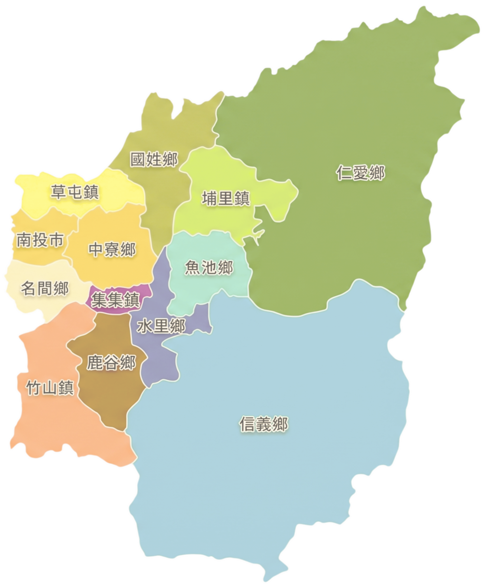
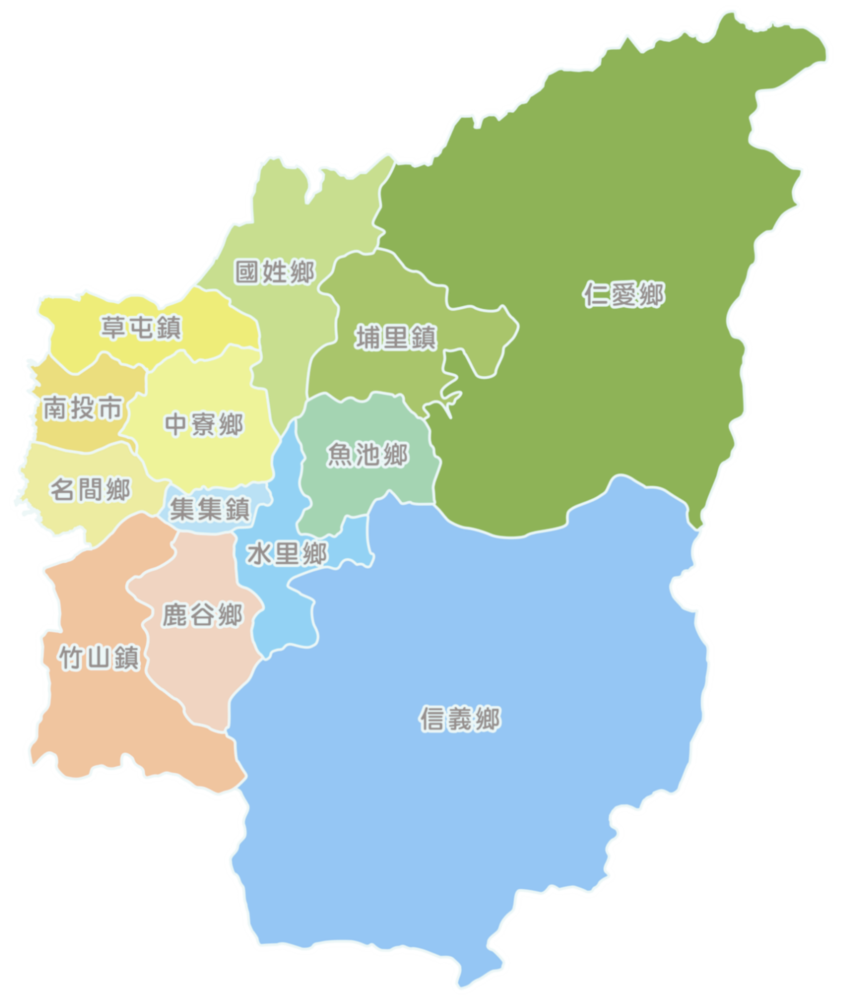
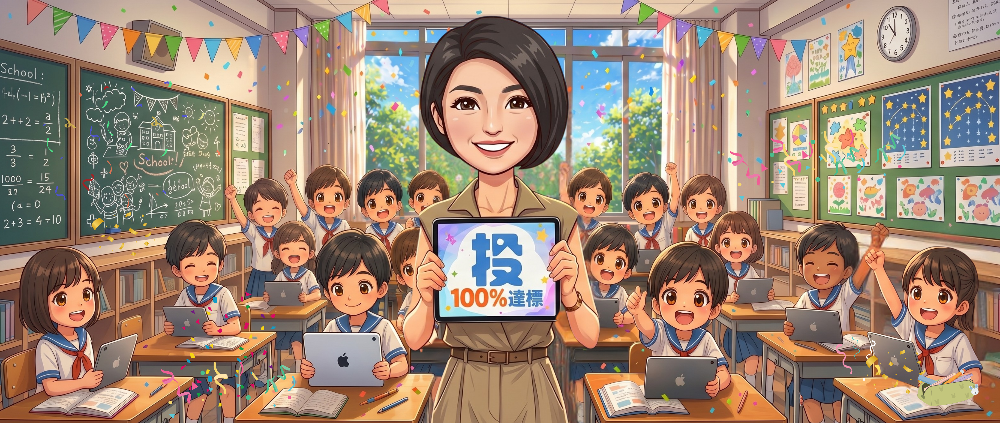

選擇活動身分
管理者 (工作人員)
貴賓 (現場參與)
縣長 (達標啟動)
系統將自動為您連線並同步音效

入數位 學力全開
生生有平板，讓每個角落都充滿學習的亮光！
完成度 0% (0/13)
系統初始化中...
點擊進度
等待選擇身分...

南投縣
生生有平板
啟動達標
背景音樂控制
▶️ 播放
⏸️ 暫停
⏮️ 重頭
🔉 減小
15%
🔊 增加
強制達標 (備用)
重置進度
音樂:
▶️ 播放
⏸️ 暫停
⏮️ 重頭
🔉
15%
🔊
強制達標 (備用)
重置進度

生生有平板
南投 100%達標
關閉視窗
返回啟動畫面
完全重置進度 (0%)
Designed by NTCT
Music by Pixabay